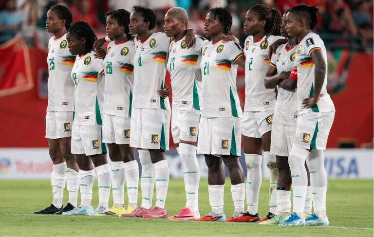

Le magazine · dernier numéro
Présidentielle 2025 : le chrono est lancé
N°005 · Le dossier, les forces en présence, et l’économie du Cameroun en 2025.
Lire le numéroLes numéros précédents
Tous les numéros


Emplacement publicitaire réservé
(seulement si la publicité Google est conservée)
(seulement si la publicité Google est conservée)
Culture et sport
Tout voir →Culture
The West Voice Music : six saisons à redonner confiance à la jeunesse camerounaise
Depuis 2021, un nom résonne de plus en plus fort dans le paysage culturel de l’Ouest.

Sport
Les Lionnes Indomptables au sommet : vers la finale de la CAN féminine
Le Cameroun élimine le Maroc aux tirs au but et se qualifie pour la finale.
Ne manquez plus un article.
Recevez les nouveaux articles et l’annonce de chaque numéro, sur WhatsApp ou par courriel.